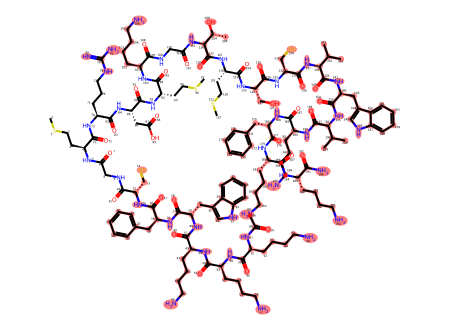
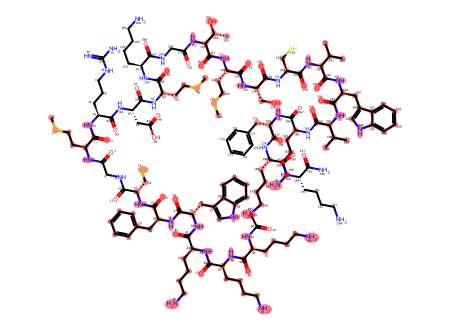
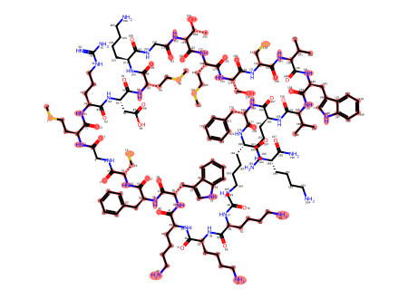
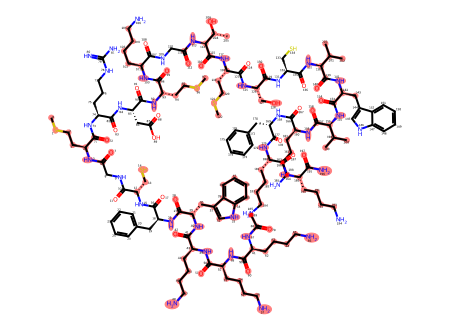
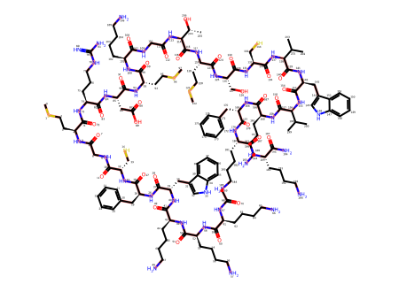
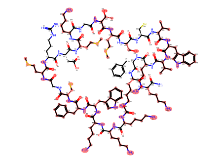
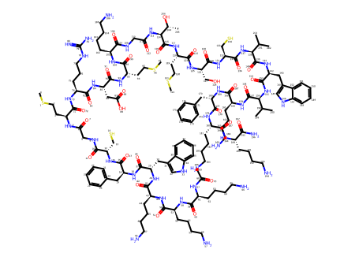

P(positive)=0.9893


P(positive)=0.9946


P(positive)=0.9975


P(positive)=0.9732


P(positive)=0.9850


CSCC[C@H](NC(=O)CNC(=O)[C@H](CS)NC(=O)[C@H](Cc1ccccc1)NC(=O)[C@H](Cc1c[nH]c2ccccc12)NC(=O)[C@H](CCCCN)NC(=O)[C@H](CCCCN)NC(=O)[C@H](CCCCN)NC(C)=O)C(=O)N[C@@H](CCCNC(=N)N)C(=O)N[C@@H](CC(=O)O)C(=O)N[C@@H](CCSC)C(=O)N[C@@H](CCCCN)C(=O)NCC(=O)N[C@H](C(=O)N[C@@H](CCSC)C(=O)N[C@@H](CO)C(=O)N[C@@H](CS)C(=O)N[C@H](C(=O)N[C@@H](Cc1c[nH]c2ccccc12)C(=O)N[C@H](C(=O)N[C@@H](CCCCN)C(=O)N[C@@H](Cc1ccccc1)C(=O)N[C@@H](CCCCN)C(=O)N[C@@H](CCCCN)C(N)=O)C(C)C)C(C)C)[C@@H](C)O

Highlights show eligible boundary bonds and selected atoms/bonds on the original molecule. Unhighlighted structure is context, not selected input. Scores and exact masks are in trace.json. Own-view mean P(positive): 0.9879. Sampling-demo freezes dropout/BatchNorm; it is not normal inference.
| View | Eligible boundary bonds | Selected atom graph highlighted |
|---|---|---|
| View 1 P(positive)=0.9893 | |  |
| View 2 P(positive)=0.9946 | |  |
| View 3 P(positive)=0.9975 | |  |
| View 4 P(positive)=0.9732 | |  |
| View 5 P(positive)=0.9850 |  |  |